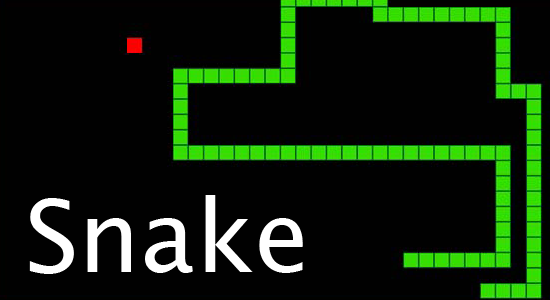

Snake
W grze gracz kontroluje długie i cienkie stworzenie, podobne do węża, które porusza się po obramowanej planszy zbierając jedzenie (lub inne przedmioty), próbując nie uderzyć własną głową o ściany otaczające planszę gry, a także o część własnego ciała. Kiedy wąż zje kawałek jedzenia, jego ogon robi się coraz dłuższy, co utrudnia grę. Gracz kontroluje kierunek ruchu węża za pomocą klawiszy strzałek (góra, dół, lewo, prawo). Gracz nie może zatrzymać węża, gdy gra jest w toku.
Graj